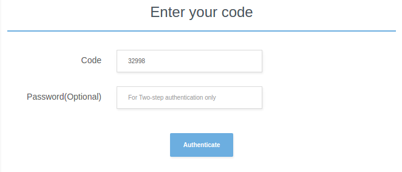

Administrator guide
Follow the next steps to configure Telegram Integration For Jira:
-
After installing the plugin click on "Managing Telegram Bot" link in "Other" section on addons
page.
-
Then you need to log in to your Telegram account. You will authenticated in as admin, so your account will be used
for sending confirmation messages during other users registration.
Enter the phone number associated with your Telegram account in the "phone" field and click on "Log
in as admin" button.
-
You will receive a message from Telegram like:
Enter code from this message in the "Code" field. Do not forward
this message or send this code by Telegram, otherwise it will be expired.
Press the "Authenticate" button.

-
Congratulations! You successfully logged in to your Telegram account! Now you need to create a bot. Enter bot
name and userName.
The name of your bot is displayed in contact details and elsewhere.
The Username is a short name, to be used in mentions and telegram.me links.
Usernames are 5-32 characters long and are case insensitive, but may only include Latin characters, numbers, and
underscores.
Your bot's username must end in ‘bot’, e.g. ‘Jira_bot’ or ‘JiraBot’.
Note: Username in Telegram is the unique identifier.
If the username you entered is already taken, you will receive an error message.
Press the "Create bot" button. If bot name and username are correct, you'll see page with telegram link
to your bot.
That's all! Plugin is configured now, link to user registration page is displayed now in the profile dropdown
in the top right corner of any JIRA page, and all users can sign in and create chats.
Note: Admin account and Bot are required for plugin to work. If you press "Log out" button, the plugin will stop working! And most importantly, do not remove the bot!